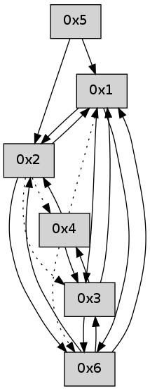

>> << IDX [start] -100 -25 -5 +0 +5 +25 +100 [505.052613974]
 Previous packets
----------------------------------------------------------------------
500.131534 beacon01(adaf) #0 coord=01,02,05,03,04,06 cycle=432.0ms assoc
-- color-indic=0 64 12 12
500.141495 beacon02(adaf) #0 coord=01,02,05,03,04,06 cycle=432.0ms assoc 64 43 ed
500.151495 beacon05(adaf) #0 coord=01,02,05,03,04,06 cycle=432.0ms assoc 64 e5 c7
500.161495 beacon03(adaf) #0 coord=01,02,05,03,04,06 cycle=432.0ms assoc 64 79 e3
500.171497 beacon04(adaf) #0 coord=01,02,05,03,04,06 cycle=432.0ms assoc 64 df c9
500.181497 beacon06(adaf) #0 coord=01,02,05,03,04,06 cycle=432.0ms assoc 64 ab d5
500.201501 [Hello(1): seq=198 sym=2,6,3 sysInfo= stat=2:4,0,0,0/6:2,0,0,0/3:11,0,0,0]
----------------------------------------------------------------------
500.623645 beacon01(adaf) #0 coord=01,02,05,03,04,06 cycle=432.0ms assoc
-- color-indic=0 64 d6 7d
500.633605 beacon02(adaf) #0 coord=01,02,05,03,04,06 cycle=432.0ms assoc 64 87 82
500.643607 beacon05(adaf) #0 coord=01,02,05,03,04,06 cycle=432.0ms assoc 64 21 a8
500.653605 beacon03(adaf) #0 coord=01,02,05,03,04,06 cycle=432.0ms assoc 64 bd 8c
500.663606 beacon04(adaf) #0 coord=01,02,05,03,04,06 cycle=432.0ms assoc 64 1b a6
500.673608 beacon06(adaf) #0 coord=01,02,05,03,04,06 cycle=432.0ms assoc 64 6f ba
500.685280 [Hello(3): seq=299 sym=4,6,1 sysInfo= stat=4:0,0,0,0/6:15,0,0,0/1:4,0,0,0]
500.688995 [Hello(2): seq=795 sym=1 asym=4,3,6 sysInfo= stat=1:3,0,0,0/4:0,0,0,0/3:11,0,0,0/6:3,0,0,0]
----------------------------------------------------------------------
501.115752 beacon01(adaf) #0 coord=01,02,05,03,04,06 cycle=432.0ms assoc
-- color-indic=0 64 9a cd
501.125712 beacon02(adaf) #0 coord=01,02,05,03,04,06 cycle=432.0ms assoc 64 cb 32
501.135712 beacon05(adaf) #0 coord=01,02,05,03,04,06 cycle=432.0ms assoc 64 6d 18
501.145713 beacon03(adaf) #0 coord=01,02,05,03,04,06 cycle=432.0ms assoc 64 f1 3c
501.155714 beacon04(adaf) #0 coord=01,02,05,03,04,06 cycle=432.0ms assoc 64 57 16
501.165714 beacon06(adaf) #0 coord=01,02,05,03,04,06 cycle=432.0ms assoc 64 23 0a
501.177440 [Hello(4): seq=300 sym=3,2 asym=6,1 sysInfo= stat=3:15,0,0,0/2:0,0,0,0/6:0,0,0,0/1:9,0,0,0]
501.180154 [Hello(1): seq=199 sym=2,6,3 sysInfo= stat=2:5,0,0,0/6:2,0,0,0/3:12,0,0,0]
----------------------------------------------------------------------
501.607860 beacon01(adaf) #0 coord=01,02,05,03,04,06 cycle=432.0ms assoc
-- color-indic=0 64 5e a2
501.617820 beacon02(adaf) #0 coord=01,02,05,03,04,06 cycle=432.0ms assoc 64 0f 5d
501.627820 beacon05(adaf) #0 coord=01,02,05,03,04,06 cycle=432.0ms assoc 64 a9 77
501.637821 beacon03(adaf) #0 coord=01,02,05,03,04,06 cycle=432.0ms assoc 64 35 53
501.647821 beacon04(adaf) #0 coord=01,02,05,03,04,06 cycle=432.0ms assoc 64 93 79
501.657821 beacon06(adaf) #0 coord=01,02,05,03,04,06 cycle=432.0ms assoc 64 e7 65
501.669542 [Hello(2): seq=796 sym=1,6 asym=4,3 sysInfo= stat=1:4,0,0,0/6:4,0,0,0/4:0,0,0,0/3:11,0,0,0]
----------------------------------------------------------------------
502.099967 beacon01(adaf) #0 coord=01,02,05,03,04,06 cycle=432.0ms assoc
-- color-indic=0 64 00 c3
502.109928 beacon02(adaf) #0 coord=01,02,05,03,04,06 cycle=432.0ms assoc 64 51 3c
502.119929 beacon05(adaf) #0 coord=01,02,05,03,04,06 cycle=432.0ms assoc 64 f7 16
502.129930 beacon03(adaf) #0 coord=01,02,05,03,04,06 cycle=432.0ms assoc 64 6b 32
502.139928 beacon04(adaf) #0 coord=01,02,05,03,04,06 cycle=432.0ms assoc 64 cd 18
502.149929 beacon06(adaf) #0 coord=01,02,05,03,04,06 cycle=432.0ms assoc 64 b9 04
502.161572 [Hello(6): seq=216 sym=2,3,1 sysInfo= stat=2:0,0,0,0/3:0,0,0,0/1:11,0,0,0]
502.165295 [Hello(4): seq=301 sym=3,2 asym=6,1 sysInfo= stat=3:0,0,0,0/2:0,0,0,0/6:0,0,0,0/1:10,0,0,0]
502.169953 [Hello(1): seq=200 sym=2,6,3 sysInfo= stat=2:6,0,0,0/6:2,0,0,0/3:12,0,0,0]
----------------------------------------------------------------------
502.592074 beacon01(adaf) #0 coord=01,02,05,03,04,06 cycle=432.0ms assoc
-- color-indic=0 64 c4 ac
502.602035 beacon02(adaf) #0 coord=01,02,05,03,04,06 cycle=432.0ms assoc 64 95 53
502.612035 beacon05(adaf) #0 coord=01,02,05,03,04,06 cycle=432.0ms assoc 64 33 79
502.622036 beacon03(adaf) #0 coord=01,02,05,03,04,06 cycle=432.0ms assoc 64 af 5d
502.632037 beacon04(adaf) #0 coord=01,02,05,03,04,06 cycle=432.0ms assoc 64 09 77
502.642037 beacon06(adaf) #0 coord=01,02,05,03,04,06 cycle=432.0ms assoc 64 7d 6b
----------------------------------------------------------------------
503.084182 beacon01(adaf) #0 coord=01,02,05,03,04,06 cycle=432.0ms assoc
-- color-indic=0 64 88 1c
503.094142 beacon02(adaf) #0 coord=01,02,05,03,04,06 cycle=432.0ms assoc 64 d9 e3
503.104143 beacon05(adaf) #0 coord=01,02,05,03,04,06 cycle=432.0ms assoc 64 7f c9
503.114146 beacon03(adaf) #0 coord=01,02,05,03,04,06 cycle=432.0ms assoc 64 e3 ed
503.124144 beacon04(adaf) #0 coord=01,02,05,03,04,06 cycle=432.0ms assoc 64 45 c7
503.134143 beacon06(adaf) #0 coord=01,02,05,03,04,06 cycle=432.0ms assoc 64 31 db
503.145862 [Hello(4): seq=302 sym=3,2 asym=6,1 sysInfo= stat=3:1,0,0,0/2:0,0,0,0/6:0,0,0,0/1:11,0,0,0]
503.150308 [Hello(1): seq=201 sym=2,6,3 sysInfo= stat=2:7,0,0,0/6:2,0,0,0/3:12,0,0,0]
----------------------------------------------------------------------
503.576289 beacon01(adaf) #0 coord=01,02,05,03,04,06 cycle=432.0ms assoc
-- color-indic=0 64 4c 73
503.586250 beacon02(adaf) #0 coord=01,02,05,03,04,06 cycle=432.0ms assoc 64 1d 8c
503.596250 beacon05(adaf) #0 coord=01,02,05,03,04,06 cycle=432.0ms assoc 64 bb a6
503.606251 beacon03(adaf) #0 coord=01,02,05,03,04,06 cycle=432.0ms assoc 64 27 82
503.616253 beacon04(adaf) #0 coord=01,02,05,03,04,06 cycle=432.0ms assoc 64 81 a8
503.626252 beacon06(adaf) #0 coord=01,02,05,03,04,06 cycle=432.0ms assoc 64 f5 b4
----------------------------------------------------------------------
504.068399 beacon01(adaf) #0 coord=01,02,05,03,04,06 cycle=432.0ms assoc
-- color-indic=0 64 01 74
504.078359 beacon02(adaf) #0 coord=01,02,05,03,04,06 cycle=432.0ms assoc 64 50 8b
504.088360 beacon05(adaf) #0 coord=01,02,05,03,04,06 cycle=432.0ms assoc 64 f6 a1
504.098361 beacon03(adaf) #0 coord=01,02,05,03,04,06 cycle=432.0ms assoc 64 6a 85
504.108361 beacon04(adaf) #0 coord=01,02,05,03,04,06 cycle=432.0ms assoc 64 cc af
504.118361 beacon06(adaf) #0 coord=01,02,05,03,04,06 cycle=432.0ms assoc 64 b8 b3
504.130088 [Hello(4): seq=303 sym=3,2 asym=6,1 sysInfo= stat=3:2,0,0,0/2:0,0,0,0/6:0,0,0,0/1:12,0,0,0]
504.133228 [Hello(1): seq=202 sym=2,6,3 sysInfo= stat=2:8,0,0,0/6:2,0,0,0/3:12,0,0,0]
----------------------------------------------------------------------
504.560507 beacon01(adaf) #0 coord=01,02,05,03,04,06 cycle=432.0ms assoc
-- color-indic=0 64 c5 1b
504.570470 beacon02(adaf) #0 coord=01,02,05,03,04,06 cycle=432.0ms assoc 64 94 e4
504.580468 beacon05(adaf) #0 coord=01,02,05,03,04,06 cycle=432.0ms assoc 64 32 ce
504.590469 beacon03(adaf) #0 coord=01,02,05,03,04,06 cycle=432.0ms assoc 64 ae ea
504.600467 beacon04(adaf) #0 coord=01,02,05,03,04,06 cycle=432.0ms assoc 64 08 c0
504.610471 beacon06(adaf) #0 coord=01,02,05,03,04,06 cycle=432.0ms assoc 64 7c dc